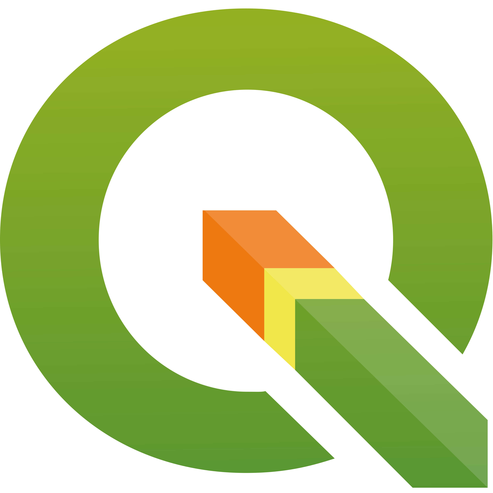
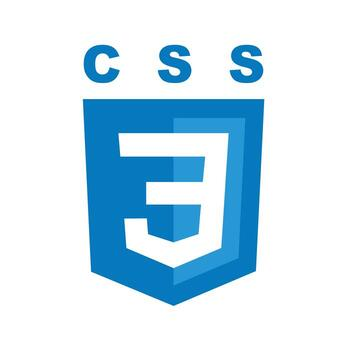

Teknolojiler ve Yetenekler
Aşağıdaki tabloda eğitimim ve projelerim boyunca kullandığım temel teknolojileri görebilirsiniz:
| Teknoloji | Kullanım Alanı |
|---|---|
|
|
Veri analizi, coğrafi analizler ve script yazımı. |
|
 QGIS & PostGIS |
Mekansal analiz, açık kaynak CBS ve veritabanı yönetimi. |
|
 HTML & CSS |
Web sayfası tasarımı, yapılandırması ve görselleştirmesi. |
|
|
Açık kaynak harita verisi sağlama ve altlık harita kullanımı. |
| Leaflet | Etkileşimli ve hafif web haritaları (Web GIS) oluşturma. |
|
|
Gelişmiş ve kapsamlı mekansal veri sunumu ve analizi. |
|
|
Proje geliştirme, kod yazımı ve versiyon kontrol (Git) süreçleri. |
|
|
Python kütüphaneleri, sanal ortam yönetimi ve veri bilimi araçları. |
| pgAdmin | PostgreSQL veritabanı yönetimi ve mekansal (spatial) sorgulamalar. |